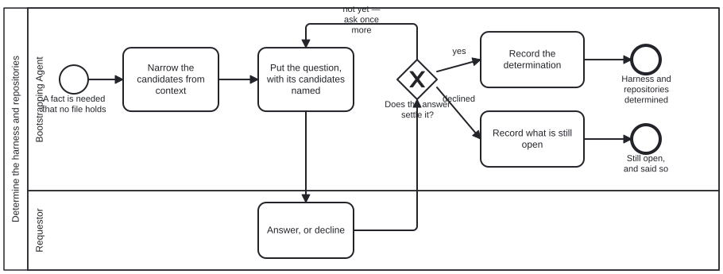
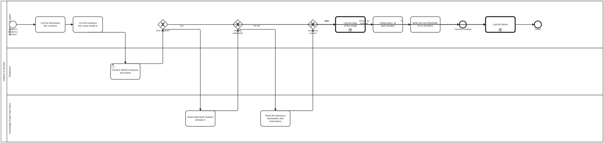

This directory is where an agent starts when it has been handed a repository
and knows nothing else about it. Everything here is a file to read: text
(.md), data (.json) and diagrams (.bpmn). Nothing here is a program, so
you need nothing installed to use it.
A capitalized word on this page is a defined term. It links to its definition
the first time it appears, and [src] beside it opens the schema that defines
it. Every definition is drawn on one page,
schemas/README.md, from one file,
schemas/graph.schema.json.
Contents
A Knowledge Graph (src) is
information kept as files in a repository: things, and the named relations
between them. One file at its root, <name>.json, declares it. That file
gives its name and lists its
Subgraphs (src), the named directories
it is divided into.
A Harness (src) is what you use to work
with a Knowledge Graph. A Harness is a Knowledge Graph too, declared the same
way. This directory is the first Harness, bootstrap, declared by
bootstrap.json.
Setting up a repository means instantiating one or more different kinds of Knowledge Graph Harness on the data in the repository. A person chooses which ones, and the choice is hard to undo.
An Actor (src) is a person, an agent or a
program. Each Actor takes a Role (src), and
the four Roles here are declared in scenarios/roles.json:
| Role | who plays it |
|---|---|
| Bootstrapping Agent | you: the agent setting the repository up |
| Requestor | the person who asked for it. Only the Requestor chooses the Harness. |
| Knowledge Graph Data Store | a repository: the one being set up, and any a Harness is read from |
| Logger | the record of what you did. Here, it is the conversation you are in. |
As the Bootstrapping Agent you have no Harness yet, so you have no Tools (src) (programs to call). If a step seems to need one, it belongs to the Harness you are about to set up, not to this one.
As the Bootstrapping Agent, I want to set up the repository I was handed as the Harness the Requestor chooses, so that everything added to it later is built on the right Harness.
The story ends in one of two ways, and both are acceptable: the Harness is set up, or the reason it could not be is recorded.
The steps are drawn as a
Process (src),
initialize-harness.bpmn. It is the only
Process you start. Each step names the
Skill (src) to read and the Functional
Requirement it must meet (see the next section).
1 Learn how to open files here
|
2 Find the candidates --- ask ---> the Requestor chooses one Harness
|
3 Check each repository --- already set up? ---> record it and stop
|
4 Record that you are starting
|
5 Follow the chosen Harness's own instructions
|
6 Leave a README at the repository's root, if it has none
At any step: something cannot be found or read ---> record it and stop
The same steps, and the Processes they start, as the diagrams themselves:
Determine the harness and repositories: processes/discussion.bpmn, the one you start.

Initialize a harness: processes/initialize-harness.bpmn, the one you start; it calls "Log a message".

Log a message: processes/log-message.bpmn, started from "Initialize a harness".
Learn how to open files here. Read
skills/bootstrap-kg-navigation.md.
Opening files is all you can do (Functional Requirement 1, FR-1).
Find the candidates, and ask the Requestor to choose. List the
Harnesses the repository could become, and the repositories it could be
set up in. Then ask the Requestor for one Harness and its repositories
(FR-3). Read skills/confirm-harness.md for
what to ask, and skills/discussion.md for how.
This step is done when the answer is written down as a document that
matches schemas/discussion.output.schema.json.
Check each repository. If its root already holds a declaration,
<name>.json, it is already set up, and you stop (FR-5).
Record that you are starting. Read
skills/log-message.md.
Follow the chosen Harness's own instructions. Every Harness keeps them at the same path (FR-4):
<name>/docs/bootstrap/initialization.md
Here <name> is the name the Requestor chose, as it appears in that
Harness's declaration, <name>.json.
Leave a README at the repository's root, if it has none (FR-8). Read
skills/root-readme.md.
If anything cannot be found or read along the way, record what failed (step 4's Skill) and stop (FR-6).
A Functional Requirement is a rule the steps must meet. Each has a number, so a step can name it: Functional Requirement 1 is FR-1.
| rule | |
|---|---|
| FR-1 | Everything named here can be reached by opening files, and by nothing else. |
| FR-2 | You start one Process, initialize-harness. The Processes discussion and log-message are started only by its steps. |
| FR-3 | Only the Requestor chooses the Harness. You may shorten the list of candidates, but never choose between two. |
| FR-4 | Every Harness keeps its set-up instructions at <name>/docs/bootstrap/initialization.md, so you can set up a Harness you have never seen. |
| FR-5 | A repository whose root already holds a declaration is already set up. You record that and stop; you never set it up again. |
| FR-6 | Anything that cannot be found or read is recorded, and stops the Process. Nothing is worked around. |
| FR-7 | This directory holds no program code, so FR-1 stays true. |
| FR-8 | When the set-up succeeds, the repository's root has a README.md naming the Harness and whether the set-up succeeded everywhere. An existing README is added to, never replaced. |
Grouped by directory, each described from the file itself. "Used by" names the Process that reads a file, where a diagram says so.
At the top
| file | what it is | used by |
|---|---|---|
AGENTS.md |
Phase one of two. | |
README.md |
The flow, with every term linked to the schema that defines it. | |
bootstrap.json |
Bootstrap |
| file | what it is | used by |
|---|---|---|
bootstrap-graph-emission.md |
What bootstrap's own Knowledge Graph must be when it is written out as a data file, .jsonld with a .json copy. |
|
bootstrap-graph-publication.md |
Where bootstrap's Knowledge Graph file is published, why its @id must be exactly that address, why a .json copy sits beside the .jsonld, and why the fi… |
|
bootstrap-kg-navigation.md |
Read and navigate a knowledge graph with nothing installed — no MCP server, no tools, no harness. | "Initialize a harness" |
confirm-harness.md |
Narrow the harnesses and locations this could be, then have the Requestor settle it. | "Initialize a harness" |
discussion.md |
discussion — settling what an agent cannot read off disk | |
log-message.md |
Say what you are doing, to the Logger, in a form a reader can act on. | "Initialize a harness", "Log a message" |
package-manifest.json |
What an agent reads before it knows whether this repository is an instance, what kind, or what for. | |
root-readme.md |
Write the repository's root README when there is none, carrying a link to the harness that was installed and the overall install status. | "Initialize a harness" |
schemas/: The schemas bootstrap is checked against: graph.schema.json, the shape of a declaration and the definition of every term bootstrap uses; and the input and…
| file | what it is | used by |
|---|---|---|
discussion.input.schema.json |
Discussion Input | |
discussion.output.schema.json |
Discussion Output | |
graph.schema.json |
Knowledge Graph declaration | |
model-registry.schema.json |
Model Registry | |
requirement.schema.json |
Requirement |
scenarios/: bootstrap's four Roles: Bootstrapping Agent, Requestor, Knowledge Graph Data Store and Logger.
| file | what it is | used by |
|---|---|---|
roles.json |
data |
processes/: bootstrap's Processes: initialize-harness.bpmn, the only one an Actor starts; discussion.bpmn, which it calls to ask the Requestor; and `log-message.bpmn…
| file | what it is | used by |
|---|---|---|
discussion.bpmn |
a Process: Determine the harness and repositories | |
discussion.svg |
the picture of discussion.bpmn, generated from it |
|
initialize-harness.bpmn |
a Process: Initialize a harness | |
initialize-harness.svg |
the picture of initialize-harness.bpmn, generated from it |
|
log-message.bpmn |
a Process: Log a message | "Initialize a harness" |
log-message.svg |
the picture of log-message.bpmn, generated from it |
|
ns.jsonld |
data |
models/: Which languages a model is good at, and whether anybody checked.
| file | what it is | used by |
|---|---|---|
models.json |
Which languages a model is good at, and whether anybody checked. |
glossary/: The swimlane glossary's retirement ledger.
| file | what it is | used by |
|---|---|---|
glossary-ledger.json |
data |
test/results/: What auditing THIS instance produced, committed so a consumer can tell "never audited" from "audited clean" — a printed verdict cannot, which is why every QA…
| file | what it is | used by |
|---|---|---|
test/results/ |
16 files, in subdirectories |